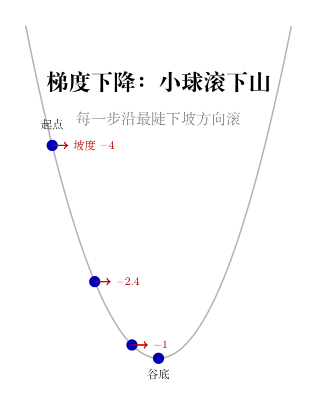

00-11 学到了：梯度指向函数值上升最快的方向。现在反过来——如果我想找最小值（谷底），每一步往梯度的反方向走。
拿最简单的二次函数 $f(x) = x^2$ 来跑梯度下降。最小值显然在 $x=0$。我们故意从 $x=3$ 出发，看它能不能滚回去。
# 00-13 第一步：梯度下降——亲眼看着小球从 x=3 滚到 x≈0
# 导入numpy，别名np
import numpy as np
# 定义函数 f(x)=x² 和它的导数 f'(x)=2x
# 导数 f'(x) 告诉我们每一步该往哪走——梯度方向
def f(x):
"""f(x) = x²——最简单的抛物线，谷底在 x=0"""
return x**2
def df(x):
"""f'(x) = 2x——导数，指向上升最快的方向"""
return 2 * x
# 初始位置——从 x=3 出发（函数值=9，离谷底 x=0 还有 3 个单位）
# 学习率 η=0.3（相当于每次往谷底走 30% 的当前偏移）
x = 3.0
# 学习率：步长参数，控制每步走多远
eta = 0.3
# 迭代 15 次——每一步打印：第几步、位置 x、函数值 f(x)、梯度 df(x)
# f"{i:2d}"：第几步，占 2 位右对齐，方便对齐阅读
# f"{x:8.4f}"：x 值，占 8 位保留 4 位小数
# f"{f(x):8.4f}"：函数值，格式同上
print(f"{'步':>3s} {'x':>8s} {'f(x)':>8s} {'梯度':>8s}")
print("-" * 35)
for i in range(15):
# 保存更新前的位置用于打印
x_old = x
# 梯度下降核心：x_new = x_old - η × f'(x_old)
# 负号表示往梯度的反方向走——下坡
x = x - eta * df(x)
print(f"{i:3d} {x_old:8.4f} {f(x_old):8.4f} {df(x_old):8.4f}")
# 最终位置——如果收敛，x 应该非常接近 0
print(f"\n最终: x={x:.6f}, f(x)={f(x):.10f}")
看输出：x 从 3.0 → 1.2 → 0.48 → 0.192 → 0.077 → ... → 趋近于 0。每一步的梯度（2x）越来越小——坡度越来越缓，步幅也越来越小。这是在「自刹车」——越靠近谷底，自然就走得越慢。
$f(x)=x^2$ 的导数是 $2x$。梯度下降的更新是 $x_{t+1} = x_t - \eta \cdot 2x_t = (1-2\eta)x_t$。
当 $\eta=0.3$ 时：$x_{t+1} = (1-0.6)x_t = 0.4x_t$。每一步位置缩为原来的 40%——呈指数衰减。
本质原因：$f'(x)=2x$ 在谷底（x=0）为零，越靠近谷底导数越小，更新量自然变小——这是梯度下降「自刹车」的根源。
不是说「学习率太大了会跨过山谷」——要多大才会跨过去？用二次函数来精确算。
拿 $f(x) = x^2 - 4x + 4$（配成 $(x-2)^2$），谷底在 $x=2$，导数 $f'(x) = 2x - 4$。
梯度下降更新：
$$x_{t+1} = x_t - \eta \cdot (2x_t - 4) = (1 - 2\eta) x_t + 4\eta$$关心的是离谷底还有多远，所以定义误差 $e_t = x_t - 2$。注意这里的 $2$ 不是随便取的——它就是谷底的位置，也就是 $(x-2)^2$ 取到最小值时那个 $x$：
$$e_{t+1} = x_{t+1} - 2 = (1-2\eta)x_t + 4\eta - 2 = (1-2\eta)(x_t - 2) = (1-2\eta) \cdot e_t$$每一步误差乘以 $(1-2\eta)$：
验证 $\eta = 1.5$： $1-2\eta = 1-3 = -2$，$|{-2}| = 2 > 1$ → 发散。从 $x_0 = 1$ 出发：误差 $e_0 = 1-2 = -1$（谷底在右边，人在左边）。$e_1 = (-2) \times (-1) = 2$，$|e_1| = 2 > |e_0| = 1$——越走越远。直接算：$x_1 = 1 - 1.5 \times (-2) = 1 + 3 = 4$，从谷底左边直接跳到右边更远的地方——发散无疑。
特例里 $f = (x-2)^2$，谷底落在 2——好算是因为系数干净。一般二次函数只多两件事：常数项 $c$ 不影响导数（它把整条曲线上下平移，谷底位置不动），$b$ 会把谷底从原点挪走。所以麻烦全在 $b$ 上。
第一步——先找谷底。谷底是斜率为零的地方，解 $f'(x) = 2ax + b = 0$：
$$x^* = -\frac{b}{2a}$$拿第三节的特例核对：$f = x^2 - 4x + 4$ 里 $a=1$、$b=-4$，代入得 $x^* = 4/2 = 2$——正是第三节那个谷底。
第二步——写出更新式。把 $f'(x) = 2ax + b$ 代入 $x_{t+1} = x_t - \eta f'(x_t)$：
$$x_{t+1} = x_t - \eta(2ax_t + b) = (1-2a\eta)x_t - \eta b$$特例里没有最后那一项 $-\eta b$——这就是一般情况多出来的东西。
第三步——定义误差。和特例一样，关心离谷底多远：$e_t = x_t - x^*$。
第四步——把更新式改写成误差的式子。
$$e_{t+1} = x_{t+1} - x^* = (1-2a\eta)x_t - \eta b + \frac{b}{2a}$$后两项都是 $b$ 的倍数，先合并起来：
$$-\eta b + \frac{b}{2a} = b\left(\frac{1}{2a} - \eta\right) = b \cdot \frac{1-2a\eta}{2a}$$这一步是整条证明的关键：把 $b$ 的项也凑出公因子 $(1-2a\eta)$。特例里 $b$ 的项压根不存在，所以特例不需要这一步。代回去就闭合了：
$$e_{t+1} = (1-2a\eta)x_t + (1-2a\eta)\frac{b}{2a} = (1-2a\eta)\left(x_t + \frac{b}{2a}\right) = (1-2a\eta)\,e_t$$第五步——解收敛条件。误差每一步乘的是同一个数 $r = 1-2a\eta$，所以 $e_t = r^t e_0$；$|r| < 1$ 时 $r^t \to 0$，误差归零：
$$|1-2a\eta| < 1 \iff -1 < 1-2a\eta < 1 \iff 0 < \eta < \frac{1}{a}$$回看特例：$f = x^2 - 4x + 4$ 里 $a = 1$，$1/a = 1$——第三节算出的 $0 < \eta < 1$ 正是这条公式在 $a=1$ 时的样子。一般结论不是新东西，是特例的推广。
第六步——为什么「弯得越急，允许的学习率越小」。$2a$ 是斜率 $2ax + b$ 的变化速度，也就是曲线弯的急缓——它就是把导数再求一次导，记作二阶导数 $f''(x) = 2a$。于是上界可以写成更干净的形式：
$$\eta_{\max} = \frac{1}{a} = \frac{2}{f''}$$误差乘子是 $1 - \eta f''$：$f''$ 越大，同样的 $\eta$ 就把乘子推得越接近 $-1$——一步跨过谷底后误差不但没收住，反而翻转放大。一旦 $\eta f'' \ge 2$，乘子的绝对值 $\ge 1$，收敛彻底失败。这就是「弯得急的谷，只能用更小的步子」的来历。
拿 $a=2$、$b=-3$、$c=7$ 跑一遍（谷底 $x^* = 0.75$，上界 $\eta < 0.5$），边界看得见：
# 00-13 第三步：一般二次函数 f(x)=ax²+bx+c——用代码看 η<1/a 这条边界
# 取 a=2, b=-3, c=7——谷底在 x*=-b/(2a)=0.75，收敛上界 1/a=0.5
a = 2.0
b = -3.0
c = 7.0
# 谷底位置：解 f'(x)=2ax+b=0，得 x*=-b/(2a)
x_star = -b / (2 * a)
# 收敛上界：η 必须小于 1/a
eta_max = 1 / a
print(f"谷底 x*={x_star}, 收敛要求 η<{eta_max}")
# 导数 f'(x)=2ax+b——这里用 a、b 算，不再写死数字
def grad(x):
"""f'(x)=2ax+b，指向上升最快的方向"""
return 2 * a * x + b
# 试 3 个学习率：0.45 收敛、0.50 卡在边界、0.51 越界
for eta in [0.45, 0.50, 0.51]:
# 每个学习率都从同一点出发：x=1.0
x = 1.0
# 误差乘子：每步误差都乘以它，|r|<1 才收敛
r = 1 - 2 * a * eta
# 打印这个小节的开头：η 和误差乘子的绝对值
print(f"\nη={eta:.2f} |1-2aη|={abs(r):.2f}")
# 走 6 步，每步打印：第几步、当前位置、误差（离谷底的距离）
for step in range(6):
print(f" 第{step}步 x={x:8.4f} e={x - x_star:8.4f}")
# 梯度下降更新：x ← x - η·f'(x)
x = x - eta * grad(x)
看这 3 段输出：$\eta = 0.45$ 在区间内，误差 0.2500 → −0.2000 → 0.1600 → …，符号左右横跳但绝对值每步缩为 80%（乘子 $|1-2a\eta| = 0.80$），最终归零；$\eta = 0.50$ 正好卡在 $\eta = 1/a$ 上，乘子的绝对值等于 1，误差 0.2500 → −0.2500 → 0.2500 → …，大小一点不变，人在谷底两边永远来回跳；$\eta = 0.51$ 越过上界，乘子绝对值等于 1.04，0.2500 → −0.2600 → 0.2704 → …，一步比一步大——发散。
注意 $\eta = 0.45$ 那一段也出现过符号横跳（跨过谷底冲到另一侧），它照样收敛——判断收敛看的是误差的绝对值，不是符号。
把第三节的 $\eta=1.5$ 跑一遍，看发散长什么样：
# 00-13 第二步：学习率太大导致发散——亲自跑一遍
# 函数 f(x) = x² - 4x + 4，谷底在 x=2
def f2(x):
"""f(x)=x²-4x+4=(x-2)²，谷底 x=2, f(2)=0"""
return x**2 - 4*x + 4
def df2(x):
"""f'(x) = 2x - 4"""
return 2*x - 4
# 学习率 η=1.5——超过收敛条件 η<1，应该发散
# 从 x=1 出发，离谷底 x=2 差 1 个单位
x = 1.0
# 学习率达 1.5——太大，误差会指数爆炸
eta = 1.5
print(f"{'步':>3s} {'x':>10s} {'|误差|':>10s}")
print("-" * 28)
for i in range(8):
# 误差 = 当前位置离谷底 (x=2) 的距离的绝对值
# 如果发散，这个值应该越来越大
error = abs(x - 2)
print(f"{i:3d} {x:10.4f} {error:10.4f}")
# 梯度下降更新——同一条公式，但 η 太大导致误差翻转放大
x = x - eta * df2(x)
# 最后一次更新后的位置——应该比起点离 x=2 更远
print(f"\n8步后: x={x:.4f}, |误差|={abs(x-2):.4f}")
print(f"误差从 1.0 变成了 {abs(x-2):.1f}——越走越远，发散！")
输出中误差从 1.0 开始，每一步翻倍——这就是发散。小球没有被「吸」向谷底，而是被「弹」向远方。
